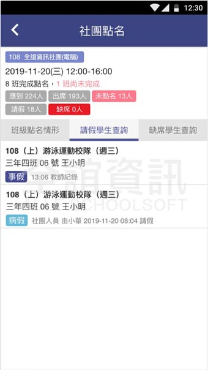
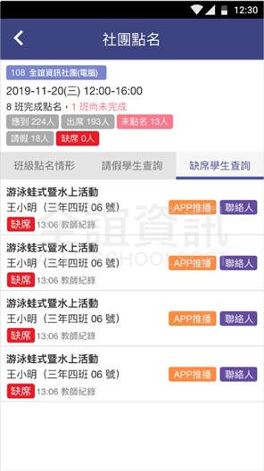

<div class="APP_application_list_class">
  <div class="APP_application_list_title">
    <span class="APP_application_list_title_left">
      <h4>社團點名</h4>  
    </span>
    <span class="APP_application_list_title_right">
      <span class="APP_list_user APP_user_orange">
        學生
      </span>
      <span class="APP_list_user APP_user_green">
        老師
      </span>
    </span>
    <div class="clear"></div>
  </div>

  <div class="APP_application_list_words">
    為社團教師點名功能，點名時自動帶入該節請假學生，社團教師點名可自動忽略請假學生，社團應到、請假、出席、缺席、未點名人數於點完名後傳送回學務處，缺曠學生可由學務處進一步追蹤。
  </div>

  <div class="APP_application_list_pic">
    <span class="APP_list_pic_margin">
      
    </span>
    <span class="APP_list_pic_margin">
      
    </span>
  </div>
</div>
